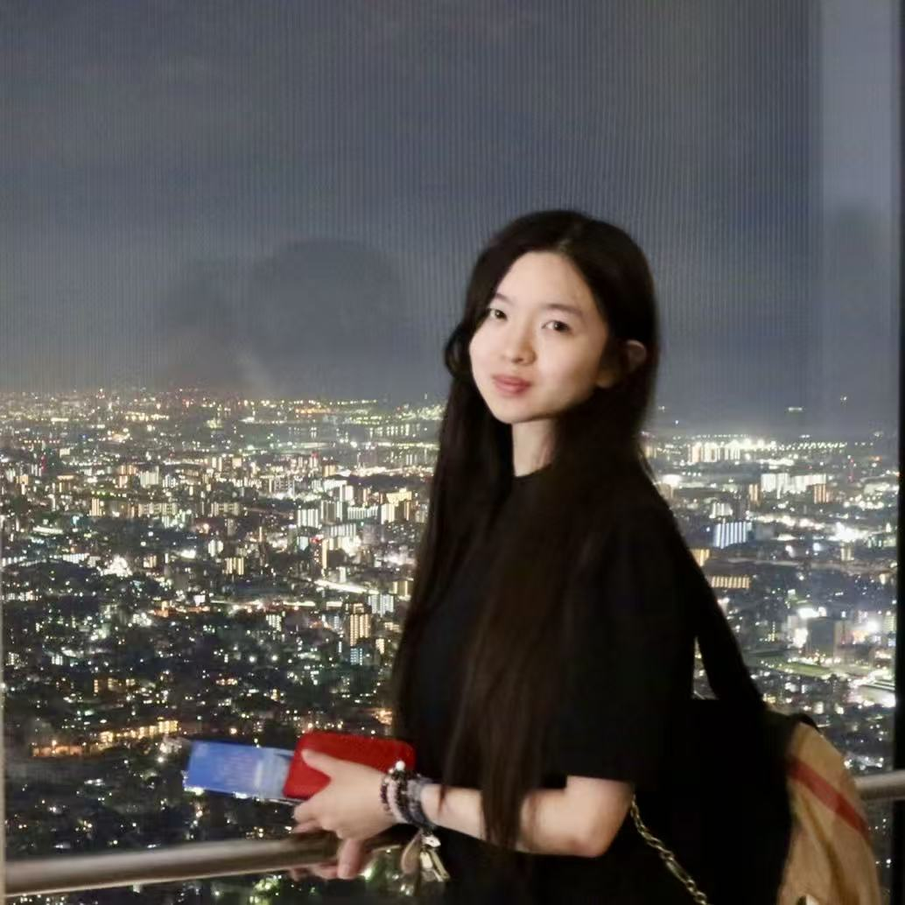

Research / Interaction Design / Participatory Media
About Me

Jiuzhen (Sise) Deng is a researcher and interaction designer working at the intersection of gameful and participatory media, ACGN (anime, comics, games, and novels) culture, and social connection 👾.
Her work examines how interactive narratives, embodied play, and multisensory design shape affective experiences and foster collective participation and a sense of belonging. Through research and creative practice, she develops interactive installations and experimental media that invite audiences to engage with narratives and environments through participation rather than observation alone 🎮.
Her research interests include gameful interaction, character engagement, participatory fandom cultures, and AI-mediated co-creation. She is particularly interested in how characters and cultural narratives circulate across media platforms and into everyday life, how shared interests foster community and informal learning, and how emerging technologies reshape the relationships between media, creators, and audiences 💭.
She continues to explore these questions through theoretical inquiry, creative experimentation, and research-through-design, always eager to learn and grow across disciplines ❤️🔥.
Curriculum Vitae
Updated Fall 2026